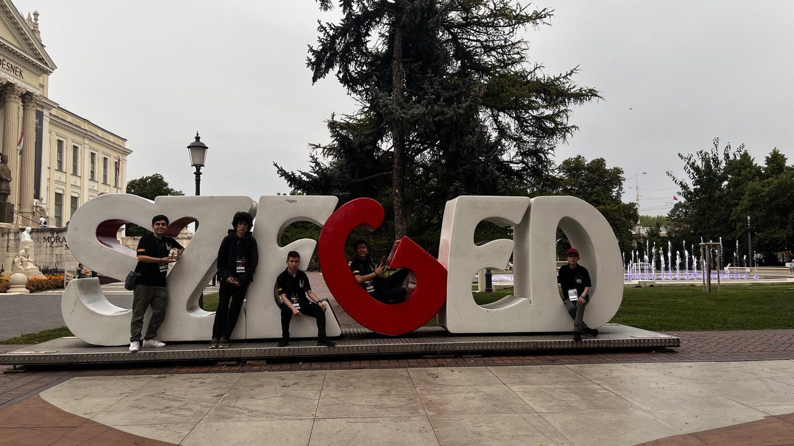

Problem D. Diego
time limit per visit: as long as you like · memory limit: one bag of popcorn
Legend
Diego Angulo Ramírez is a programmer, problemsetter, teacher and student from Cochabamba, Bolivia.
He graduated from MIPT and is now on an AI master's. He competed at the IOI in 2015 and 2017, and today he leads Bolivia's team there. This page is his little portion of the Internet.
Input
One curious visitor. You may want his CV, his resources for competitive programming, or the problem list he uses to train students for the OBI.
Output
Print the latest things he wrote, newest first.
- Thank you team
- Carta abierta al equipo IOI
- The paradox of Losing Trying to find a logic to my life
- Fear Of Missing Out Every other life is better than mine.
- 2023 About letting go, and growing up
Examples
tell me a fact about diego
I have a serious addiction to popcorn.

Note: things he has built

OBI website
The official site of the Bolivian Olympiad in Informatics. Static Astro on Cloudflare Pages.

OBIA-ChatBot
A chatbot for AI contests, with per-contest limits and admin controls.

Editorial Generator
Statement plus accepted solution in, editorial out. LangGraph agents.
Five more in all projects: AlgoCritic, a CSES test downloader, a territory war game, a CoinGecko anomaly tracker and LinkedBot.
